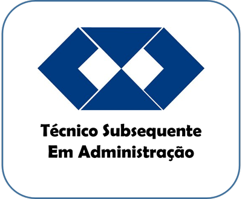

Sobre a profissão

A profissão do administrador é importante em todas as áreas de atuação. Pela sua necessidade, em todas as empresas é imprescindível a presença desse profissional. É o profissional responsável pela articulação de elementos organizacionais internos e externos, mediante criação, manutenção e desenvolvimento de estruturas que possibilitem, por meio do gerenciamento estratégico, o progresso da organização.
A carreira
É vasta a quantidade de oportunidades que o administrador pode ter como opção. Esse profissional poderá atuar em diversas áreas, não só em administração de empresas, como também, em administração hospitalar, hoteleira, em área educacional, esportiva, financeira, recursos humanos, administração pública, vendas, entre outras. Além disso, o profissional de administração pode ocupar vários cargos, tais como: gerentes, analistas, supervisores e até presidentes.
O mercado de trabalho
É relativamente pequeno o índice de desemprego entre os formados em Administração, sendo que esses profissionais são procurados por empresas dos tipos fabris, comerciais, serviços e agronegócios e de praticamente, todas as áreas, como lazer, educação e turismo.